{gsm} (Good Statistical Monitoring) is a qualified set of R packages that provides a GxP framework for central monitoring in clinical trials.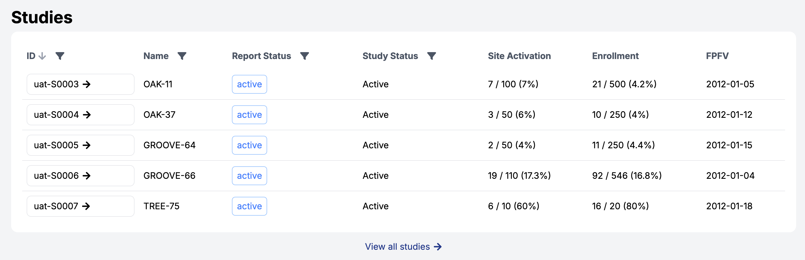
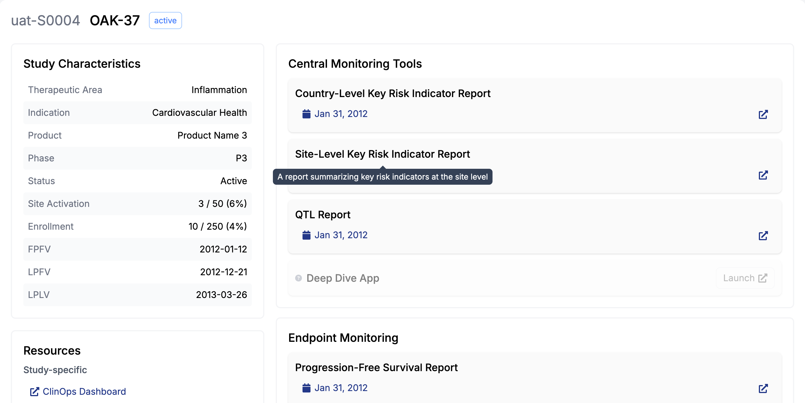
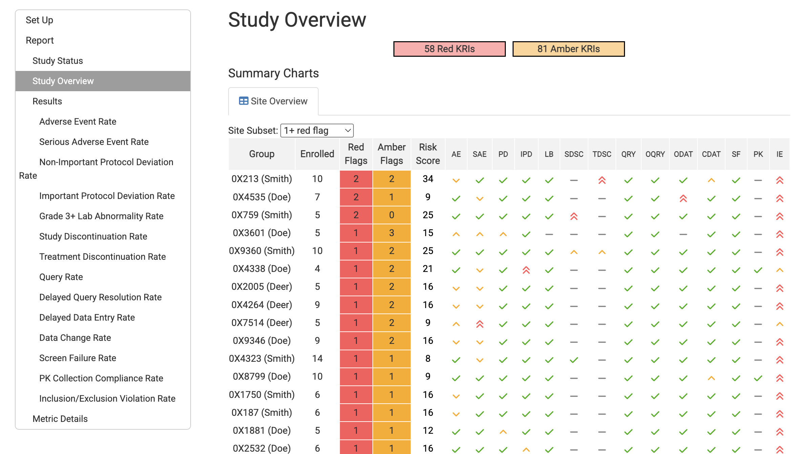
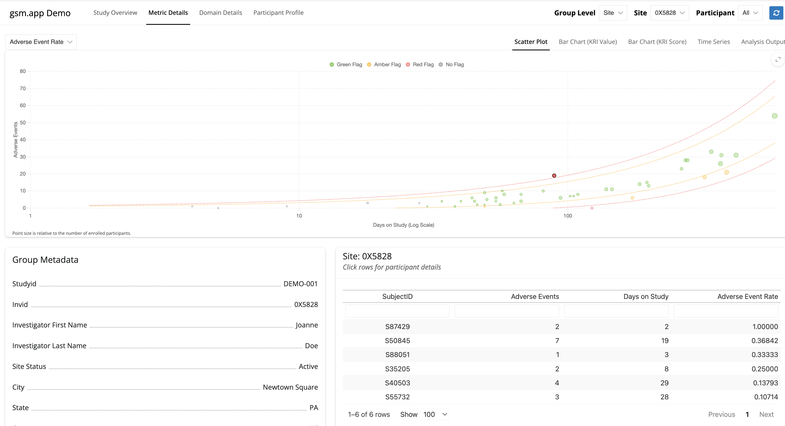
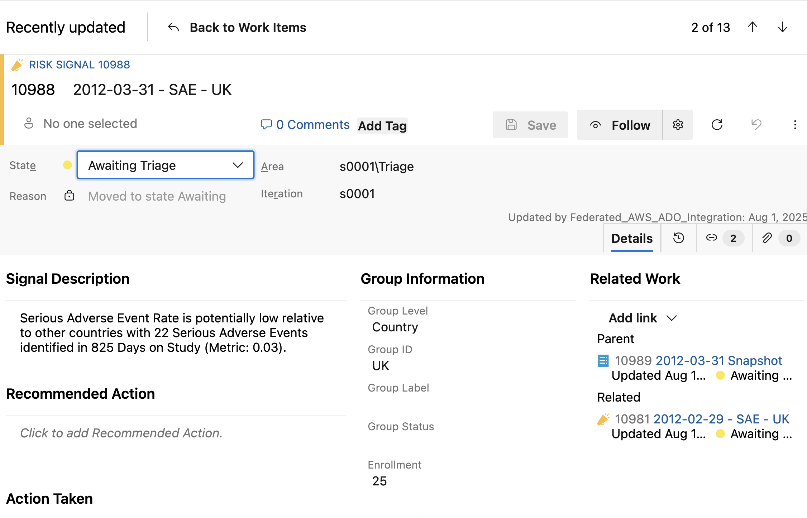
gsm.core — Core analytics workflow enginegsm.mapping — Study mapping configuration toolkitgsm.kri — Key risk indicator reportinggsm.reporting — Modular report generation frameworkgsm.qtl — Query tolerance limit analyticsgsm.app — Interactive monitoring applications layer⚙️ Data Ingestion
Clinical and operational inputs are loaded into the pipeline.
⚙️ Data Cleaning
Data quality checks and harmonization are applied.
⚙️ Metric Calculation
Configured metrics and thresholds are computed.
⚙️ Reporting / Application Layer
Outputs are delivered through reports and applications.
⚙️ Risk Signal Business Logic
Rules generate and manage risk signals.
👩⚕️ Action Log Framework
SME review and action assignment with traceability.
Key Features
⚙️ Ingestion
Clinical data lake (AE and participant domains) + operational data lake (site/study metadata).
⚙️ Data Cleaning
Check anomalies, standardize participant populations between domains, and filter to serious SAEs.
⚙️ Metric Calculation
Numerator = number of SAEs; denominator = months on study; metric = site-level SAE rate; score = Z-score; flag = red/amber/green.
⚙️ Report
{gsm} KRI report
⚙️ Risk Signal Business Logic
Create site-level risk signals for red/amber flags, suppress repeat signals, and provide default actions.
👩⚕️ Action Log
SME reviews each risk signal and assigns actions in ADO.
⚙️ Ingestion
⚙️ AE Data Cleaning
⚙️ Protocol Dev.
⚙️ Enrollment
⚙️ Queries
⚙️ Labs
⚙️ AE Rate
⚙️ SAE Rate
⚙️ PD Rate
⚙️ IPD Rate
⚙️ Drop Out Rate
⚙️ Disc. Rate
⚙️ Query Rate
⚙️ Time To Query
⚙️ Lab Compliance
⚙️ Grade 4+ Rate
⚙️ Report
⚙️ Risk Signals
👩⚕️ Action Log
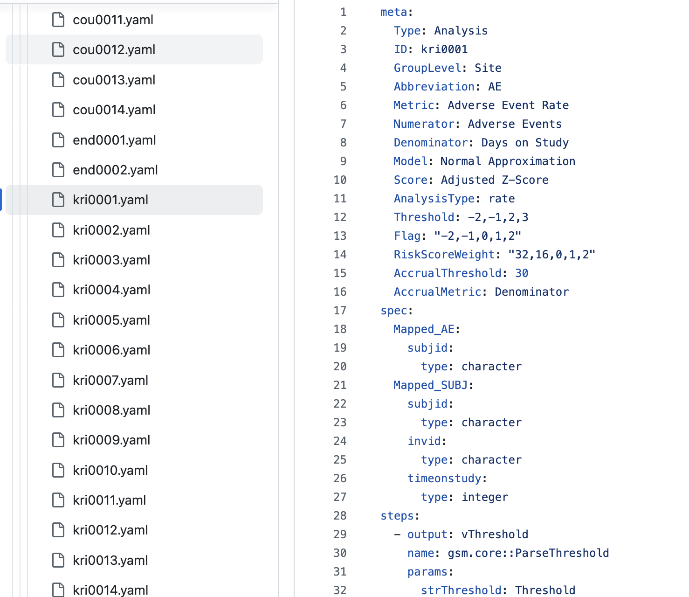
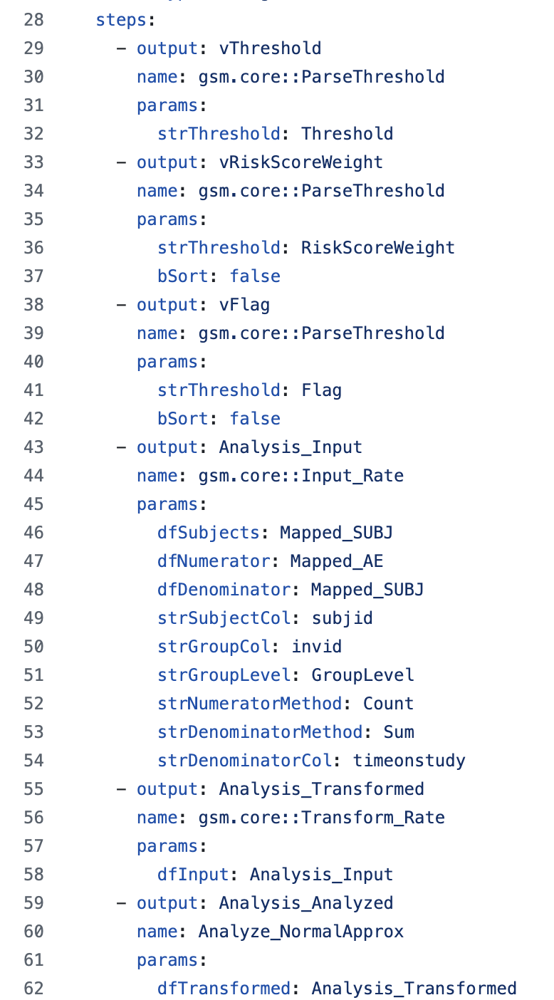
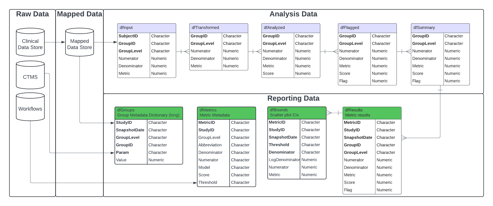
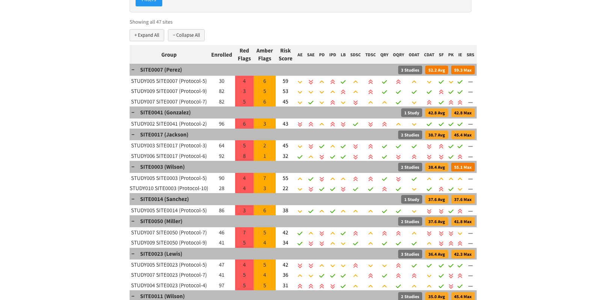
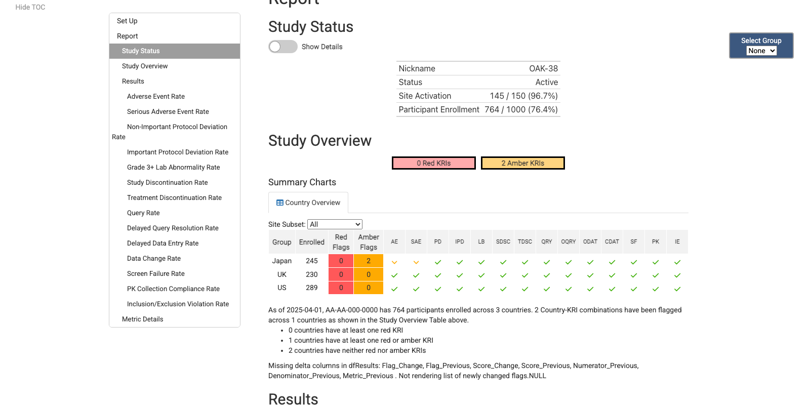
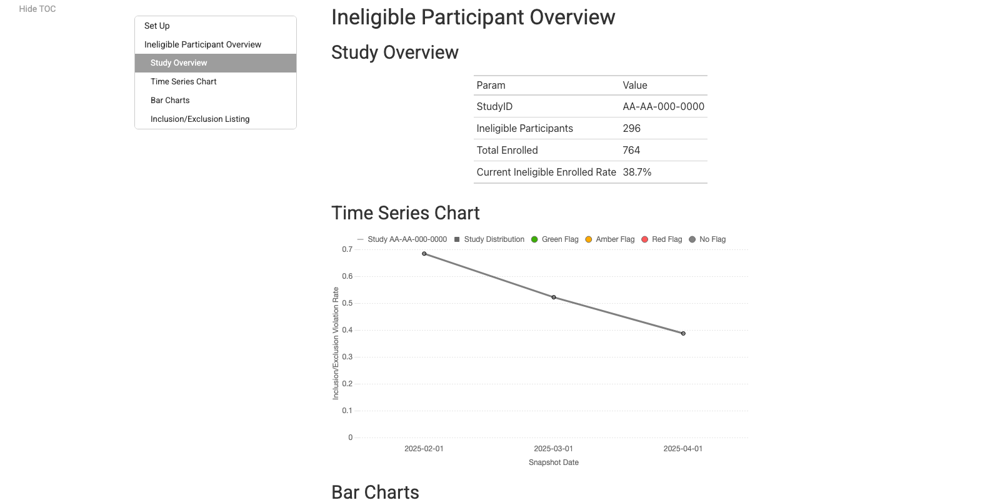
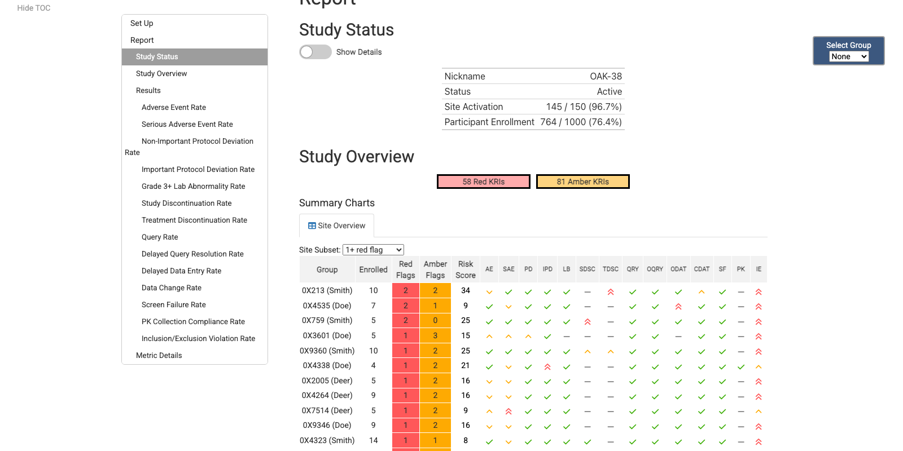
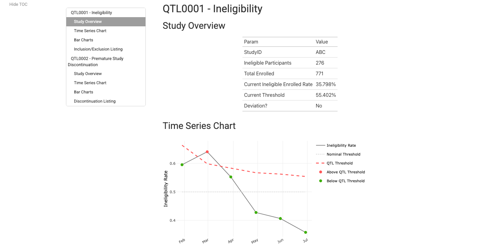
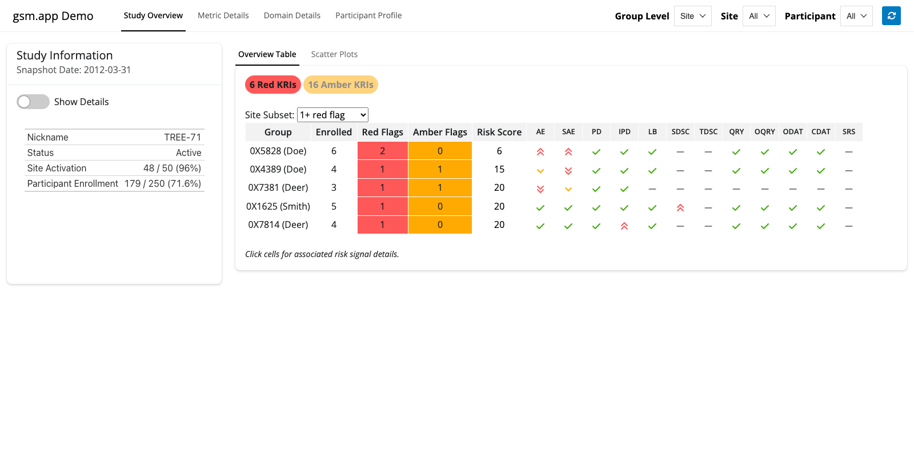